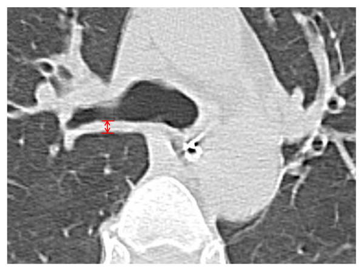
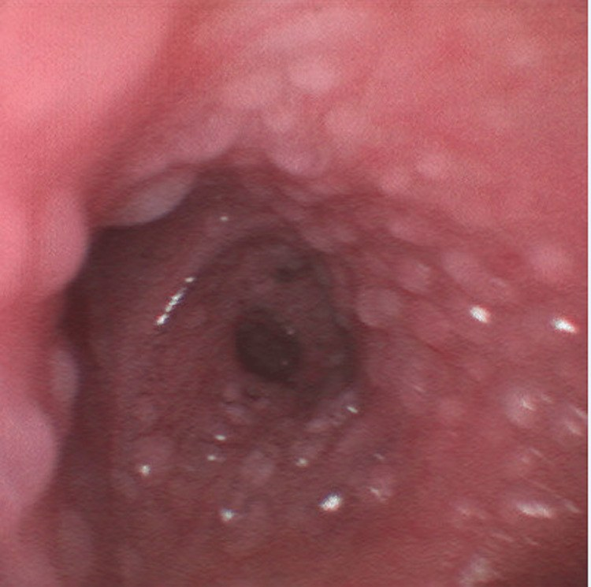
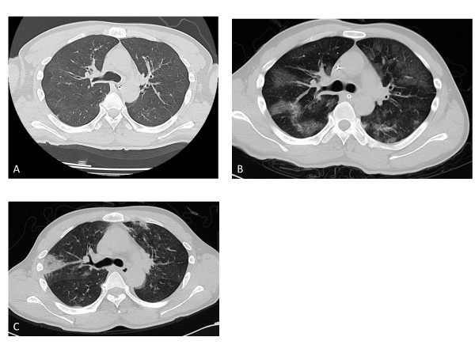
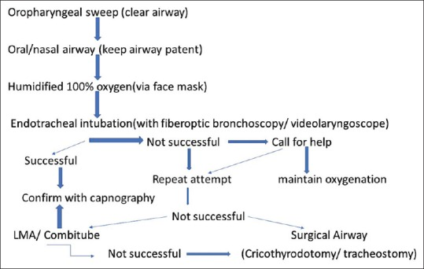

090 — Bỏng hít đường thở ở trẻ / Pediatric inhalation injury
Tags: pattern:bong-hit-duong-tho pattern:phu-duong-tho pattern:day-thanh-phe-quan pattern:xep-phoi vung:duong-tho vung:phe-quan vung:phoi protocol:noi-soi-phe-quan protocol:CT-nguc protocol:X-quang-nguc score:bronchoscopy-grade
Mức chắc chắn (certainty): tổng hợp y văn (literature synthesis) — ghép 1 đoàn hệ 60 trẻ được nội soi phế quản vì nghi bỏng hít (PMC10442977), 1 nghiên cứu 37 ca về CT ngực thì đầu để lấy ngưỡng dày thành phế quản (PMC3707034), 1 tổng quan cơ chế – điều trị (PMC3653783), 1 phân tích gộp 9 thử nghiệm về heparin khí dung (PMC7271764) và 1 ca nguyên văn có ảnh nội soi (PMC10544648). Ca có ảnh là người lớn 26 tuổi — dùng để minh họa hình thái tổn thương đường thở, không dùng để suy ra tỷ lệ ở trẻ.
Câu chốt: Trong bỏng hít ở trẻ, "phổi trắng sạch" trên X-quang không loại trừ gì cả — tổn thương quyết định nằm ở đường thở, và đường thở của trẻ chỉ rộng 4–5 mm ở dưới thanh môn: thêm 1 mm phù làm sức cản tăng ~16 lần (định luật Poiseuille). Ba con số phải nhớ: (1) bỏng hít gặp ở 20–30% trẻ bỏng nặng; (2) thành phế quản dày > 3,0 mm trên CT thì đầu dự báo viêm phổi với Se 79% / Sp 96%; (3) nội soi phế quản độ III–IV (loét/hoại tử/niêm mạc bong) đi kèm thở máy 82,6% ở nhóm có bỏng hít so với 14,3% ở nhóm không.
1. Tổng quan bệnh học – cơ chế hình ảnh (TẠI SAO)
1.1 Ba cơ chế — ba tầng giải phẫu khác nhau
| Cơ chế | Tầng tổn thương | Vì sao giới hạn ở tầng đó |
|---|---|---|
| Nhiệt (heat) | Trên thanh môn → khí quản, trừ khi hít hơi nước (steam) | Không khí trong phòng cháy tới 1000 °F, nhưng nhiệt dung của không khí thấp, đường thở trên tản nhiệt rất hiệu quả và phản xạ đóng thanh quản → khí quá nóng nguội trước khi xuống carina (PMC3653783) |
| Hoá chất (chemical) | Toàn bộ đường thở, kể cả phế quản nhỏ và nhu mô | Khói chứa aldehyde, acid, oxit nitơ, acrolein — hoà tan vào niêm mạc, gây viêm, bong biểu mô, phù; không bị "tản nhiệt" |
| Toàn thân (systemic) | Máu – ty thể | CO gắn hemoglobin mạnh gấp 200 lần oxy; cyanid ức chế cytochrome oxidase → tế bào không dùng được oxy dù máu đủ oxy (PMC3653783) |
- Hơi nước là ngoại lệ quan trọng: hơi nước mang ẩn nhiệt lớn, nên hít hơi từ nồi áp suất/vụ nổ có thể gây bỏng trực tiếp dưới carina — đúng loại tổn thương mà "không khí nóng" thường không gây được (PMC3653783). Đây cũng là lý do ca PMC10544648 (bỏng bếp, 66% TBSA) có bóng nước (bulla) rải khắp niêm mạc phế quản thay vì chỉ bồ hóng.
1.2 TẠI SAO trẻ nguy hiểm hơn người lớn — vật lý dòng khí
- Định luật Poiseuille: sức cản đường thở R ∝ 1/r⁴. Dưới thanh môn của nhũ nhi chỉ rộng 4–5 mm; 1 mm phù (bán kính 2 mm → 1 mm) làm R tăng 16 lần, và diện tích lòng giảm ~75%. Ở người lớn khí quản ~18 mm, cùng 1 mm phù chỉ làm R tăng ~1,26 lần.
- Mô dưới niêm mạc lỏng lẻo + sụn mềm → phù lan nhanh; điểm hẹp nhất là vòng sụn nhẫn (cricoid) ở trẻ nhỏ, không phải dây thanh.
- Hệ quả thực hành: trẻ có thể nói chuyện, chơi, SpO₂ 98% rồi tụt đường thở trong 30–60 phút khi phù đạt ngưỡng. Phù tăng song song với truyền dịch hồi sức trong 6–24 giờ đầu (PMC3653783).
- Vì sao khám lúc nhập viện không tiên lượng được: bài tổng quan ghi rõ "đánh giá ban đầu không phải chỉ báo tốt về mức độ tắc nghẽn sẽ xảy ra sau đó" (PMC3653783).
1.3 Vì sao hình ảnh lại như vậy
- X-quang ngực: phần lớn bình thường lúc đầu vì tổn thương là phù niêm mạc, không phải dịch trong phế nang. Khi có bất thường muộn hơn: dày thành phế quản, xẹp phổi, thâm nhiễm.
- CT: phù thành phế quản làm thành dày — đo được bằng mm. Trong nghiên cứu 37 ca, thành phế quản bình thường 1,0 ± 0,6 mm, tăng lên 2,45 ± 1,26 mm lúc nhập viện, đỉnh 3,40 ± 1,20 mm sau 24 giờ, rồi giảm còn 1,49 ± 0,64 mm sau 7 ngày (PMC3707034). TẠI SAO đỉnh ở 24 giờ: phù tăng theo rò mao mạch + hồi sức dịch, đạt đỉnh khi cả hai cùng tác động, rồi giảm khi niêm mạc tái hấp thu.
- Nội soi phế quản: là chuẩn tham chiếu vì nhìn trực tiếp bồ hóng, phù, loét, mảng niêm mạc bong, cast — những thứ CT chỉ thấy gián tiếp.
- Cast (nút nhầy–biểu mô): biểu mô phế quản bong thành mảng, cộng dịch tiết giàu protein và chất nhầy tăng tiết → đông đặc, bít lòng phế quản → xẹp phổi và ức chế co mạch phổi do thiếu oxy (shunt) (PMC5879861, Fig. 2).
1.4 Ngưỡng định lượng cần nhớ
| Chỉ số | Số liệu | Nguồn |
|---|---|---|
| Tần suất ở trẻ bỏng nặng | 20–30% | PMC10442977 |
| Tử vong loạt 850 trẻ (Shriners, 10 năm) | ~16%, phần lớn do biến chứng phổi | dẫn trong PMC10442977 |
| Tử vong thêm do bỏng hít (người lớn, > 1.000 ca) | +20% tối đa khi chỉ có bỏng hít; +60% khi kèm viêm phổi | PMC3653783 |
| Tử vong bỏng hít so với không bỏng hít (gộp) | 27,6% vs 13,9% | PMC3653783 |
| COHb trong đám cháy không gian kín | > 10%; tổn thương đáng kể có thể xảy ra ngay từ 10% | PMC3653783 |
| Bán thải COHb | 250 phút khí trời → 40–60 phút với O₂ 100% | PMC3653783 |
| Thành phế quản trên CT (bình thường → đỉnh) | 1,0 ± 0,6 → 3,40 ± 1,20 mm (24 giờ) → 1,49 ± 0,64 mm (ngày 7) | PMC3707034 |
| Ngưỡng BWT > 3,0 mm dự báo viêm phổi | Se 79% · Sp 96% · PPV 91% · NPV 88% | PMC3707034 |
| Điểm nội soi > 2 dự báo viêm phổi | Se 50% · Sp 70% — kém hơn CT | PMC3707034 |
| Trẻ cần thở máy khi có bỏng hít | 82,6% vs 14,3% (p < 0,001) | PMC10442977 |
| TBSA ngưỡng tử vong ở trẻ bỏng hít | ≥ 47,5%: OR 5,075 (1,223–21,065), AUC 0,744 | PMC10442977 |
2. Mẫu hình + chẩn đoán phân biệt theo vị trí và theo thời gian (Gamut)
Mẫu hình cốt lõi: bồ hóng + phù + dày thành phế quản, với X-quang sớm thường bình thường, ở trẻ bỏng mặt/cổ trong không gian kín.
- Theo tầng giải phẫu:
- Trên thanh môn/thanh môn: phù lưỡi, nắp thanh môn, phễu thanh quản → rít, khàn, nuốt đau, chảy nước bọt — nguy cơ tắc nghẽn cấp.
- Khí quản – phế quản: bồ hóng, ban đỏ, loét, bong niêm mạc, cast → ho, khò khè, xẹp phổi từng vùng.
- Nhu mô: ARDS, xẹp, viêm phổi (thường quanh ngày thứ 10 nếu có) (PMC3653783).
- Toàn thân: ngộ độc CO/cyanid — hình ảnh phổi không tương xứng với mức nặng.
- Theo thời gian (quan trọng để không "đọc sai phim bình thường"):
- 0–6 giờ: X-quang thường bình thường; COHb có thể đã giảm vì chờ vận chuyển.
- 6–24 giờ: phù đường thở tăng nhanh — đây là cửa sổ đặt ống sớm.
- 24–72 giờ: CT đỉnh dày thành phế quản, ARDS.
- 5–10 ngày: viêm phổi (trung vị ~10 ngày trong loạt Shirani) (PMC3653783).
- Tuần–tháng: hẹp khí quản, hẹp dưới thanh môn, u hạt (bài 3047).
3. Bảng so sánh phân biệt (ma trận đối chiếu)
| Thực thể (entity) | Hình ảnh điển hình | Chốt vào (rule-in) | Chốt loại (rule-out) | Gợi ý xác nhận |
|---|---|---|---|---|
| Bỏng hít đường thở (inhalation injury) | Bồ hóng/ban đỏ/loét trên nội soi; dày thành phế quản; X-quang sớm bình thường | Bồ hóng dưới dây thanh + bối cảnh cháy không gian kín; BWT > 3,0 mm | Nội soi không bồ hóng, không phù, BWT < 2 mm → ít khả năng | Nội soi phế quản ≤ 12 giờ + CT lát mỏng |
| ARDS do bỏng da/ hồi sức dịch | Mờ lan hai bên, dưới màng phổi, không dày thành phế quản; PaO₂/FiO₂ giảm | Mờ hai bên trong 24–72 giờ + P/F < 300 + không phải phù do tim | Mờ một vùng + dày thành phế quản → bỏng hít/xẹp | CT + khí máu + siêu âm tim |
| Viêm phổi bệnh viện/ thở máy | Thâm nhiễm mới hoặc tiến triển, mờ đồng nhất một thùy, có thể hang | Thâm nhiễm MỚI sau 48 giờ + sốt + tăng bạch cầu + vi khuẩn | Mờ xuất hiện ngay giờ đầu, không sốt → phù/bỏng hít, không phải viêm phổi | Cấy dịch rửa phế quản; không cấy = không chẩn đoán |
| Xẹp phổi do cast | Mờ tam giác một phân thùy, dịch chuyển rãnh, giảm thể tích | Mờ + giảm thể tích + nội soi thấy cast bít phế quản | Mờ không giảm thể tích, không cast → ARDS/viêm phổi | Nội soi hút cast; X-quang/CT so sánh |
| Phù phổi do truyền dịch quá mức (fluid creep) | Mờ hai bên đối xứng, dày vách, tràn dịch màng phổi, cân nặng tăng | Cân nặng tăng > 10% + mờ hai bên + bóng tim to | BWT tăng đơn độc, cân nặng ổn định → bỏng hít | Cân nặng, bảng dịch, siêu âm |
| Hẹp khí quản/ dưới thanh môn muộn | Hẹp khu trú, thành dày xơ, không thay đổi theo nhịp thở | Tiền sử đặt ống/mở khí quản + rít cả hai thì + hẹp cố định | Hẹp thay đổi thì thở (mềm sụn) → khác | CT lát mỏng + nội soi ống mềm (bài 3047) |

Cách đo bronchial wall thickness (BWT) trên HRCT: đo vuông góc với trục phế quản, 2 cm dưới carina, tại điểm dày nhất (mũi tên đỏ). Đây là phép đo có ngưỡng hành động: > 3,0 mm dự báo viêm phổi. Nguồn: Crit Care 2013, Fig. 1 — PMC3707034, CC BY 4.0, nguyên bản.4. Protocol chụp, phân độ và xử trí đường thở
4.1 Hình ảnh — thứ tự và ngưỡng
- X-quang ngực tại giường (thì đầu): không loại trừ — dùng làm mốc nền và tìm tràn khí, xẹp, thâm nhiễm.
- CT ngực lát mỏng (≤ 1 mm) trong vài giờ đầu, khi trẻ đã ổn định: đo BWT 2 cm dưới carina; tìm xẹp, mờ kính, tràn khí/dịch. Ngưỡng BWT > 3,0 mm → dự báo viêm phổi (Se 79%/Sp 96%) (PMC3707034). Không chụp CT khi trẻ đang tụt đường thở — đường thở trước, hình ảnh sau.
- Nội soi phế quản ống mềm trong 12 giờ đầu: xác định bồ hóng, phù, loét, cast; phân độ theo bảng dưới; đồng thời hút và rửa để lấy mẫu cấy.
- Xét nghiệm: co-oximetry (không dùng SpO₂ thường), khí máu, lactat, điện tim; nghi cyanid khi toan chuyển hoá + lactat cao trong cháy vật liệu tổng hợp.
4.2 Phân độ nội soi phế quản (dùng trong đoàn hệ trẻ)
| Độ | Tổn thương | Ý nghĩa thực hành |
|---|---|---|
| 0 | Không tổn thương | Loại bỏ bỏng hít nếu không có bối cảnh mạnh |
| I – nhẹ | Ban đỏ nhẹ hoặc bồ hóng ở phế quản gần và xa | Theo dõi, oxy ẩm |
| II – vừa | Ban đỏ vừa, bồ hóng, tăng tiết phế quản hoặc tắc nghẽn phế quản | Vật lý trị liệu hô hấp, hút đờm |
| III – nặng | Viêm nặng, niêm mạc dễ chảy máu, nhiều bồ hóng, tăng tiết nhiều, tắc nghẽn | Thở máy bảo vệ, nội soi rửa lặp lại |
| IV – rất nặng | Bong niêm mạc, hoại tử, bít hoàn toàn lòng | Can thiệp tích cực, tiên lượng xấu |
Bảng phân độ theo PMC10442977 (Bảng 1 của bài gốc).
- Trong 60 trẻ được nội soi: bình thường 23,3% · nhẹ 30% · vừa 26,7% · nặng 18,3% · rất nặng 1,7%; 46/60 (76,7%) có bỏng hít xác nhận (PMC10442977).
- Lưu ý phản biện: điểm nội soi > 2 chỉ đạt Se 50%/Sp 70% cho viêm phổi — kém hơn BWT trên CT; đừng dùng phân độ nội soi một mình để tiên lượng (PMC3707034).
4.3 Quyết định đường thở
- Đặt ống sớm khi có: rít (stridor), khàn tiếng, chảy nước bọt/khó nuốt, phù mặt–cổ sâu, bỏng niêm mạc miệng, bồ hóng vùng hầu, GCS ≤ 8, co kéo cơ hô hấp, SpO₂ giảm/tăng CO₂ (PMC3653783; PMC10442977).
- Chọn ống nhỏ hơn 0,5–1,0 mm so với tuổi vì phù dưới thanh môn; chuẩn bị nội soi ống mềm/ống cứng và phương án mở khí quản khi mặt bỏng nặng không đặt được qua miệng (PMC10442977).
- Không đặt ống "phòng ngừa" hàng loạt ở trẻ chỉ có bồ hóng nhẹ, không triệu chứng: ống làm tăng nguy cơ viêm phổi và hẹp khí quản muộn.
flowchart TD
A[Trẻ nghi bỏng hít đường thở] --> B{Có dấu hiệu tắc nghẽn đường thở trên}
B -->|Có| C[Đặt nội khí quản sớm, ống nhỏ hơn 0,5 đến 1 mm]
B -->|Không| D{COHb trên 10 phần trăm hoặc ngất hoặc toan chuyển hóa}
D -->|Có| E[Oxy 100 phần trăm + co-oximetry + khí máu + lactat]
D -->|Không| F[Theo dõi sát 24 đến 48 giờ và nội soi phế quản đánh giá]
E --> G{Nội soi phế quản độ III đến IV}
F --> G
G -->|Có| H[Thông khí bảo vệ + hút đờm + vật lý trị liệu hô hấp]
G -->|Không| I[Oxy ẩm + theo dõi sát]
C --> H
4.4 Điều trị hỗ trợ có bằng chứng
- Oxy 100% ngay khi nghi ngộ độc CO: rút bán thải từ 250 phút xuống 40–60 phút (PMC3653783). Đo COHb bằng co-oximetry, không dựa vào SpO₂.
- Hồi sức dịch: công thức bỏng chuẩn (Parkland 2–4 mL/kg/%TBSA); bỏng hít làm tăng nhu cầu dịch nhưng truyền dư làm phù đường thở nặng hơn — theo dõi nước tiểu, lactat, cân nặng, tránh "fluid creep".
- Heparin + N-acetylcysteine khí dung: gộp 9 thử nghiệm — tử vong RR 0,75, thời gian thở máy SMD −0,78, nằm viện SMD −0,42; không giảm viêm phổi (RR 0,97) và không giảm đặt lại ống (RR 0,88) (PMC7271764). Bằng chứng chất lượng thấp, không phải chuẩn bắt buộc.
- Không kháng sinh dự phòng, không corticoid toàn thân — không cải thiện kết cục và làm tăng nhiễm khuẩn (PMC10442977 mô tả phác đồ không dùng cả hai).
- Vật lý trị liệu hô hấp + nội soi rửa lặp lại khi có xẹp dai dẳng do cast (PMC10442977).
5. Biến thể bình thường và cạm bẫy
- Cạm bẫy 1 — X-quang bình thường: phần lớn bệnh nhi X-quang đầu bình thường; "phổi sạch" không loại trừ bỏng hít. Quyết định dựa vào bối cảnh + nội soi, không dựa vào phim.
- Cạm bẫy 2 — SpO₂ bình thường trong ngộ độc CO: máy đo hai bước sóng đọc carboxyhemoglobin như oxyhemoglobin → SpO₂ 98–100% giả. Phải co-oximetry; da hồng anh đào (cherry-red) là dấu hiệu hiếm và muộn.
- Cạm bẫy 3 — COHb "bình thường" vì đo muộn: bán thải 250 phút khí trời; trẻ đến sau 1–2 giờ có thể đã giảm COHb trong khi vẫn tổn thương thần kinh/tim. Điều trị theo lâm sàng + bối cảnh, không theo con số đơn thuần.
- Cạm bẫy 4 — không thấy bồ hóng: bồ hóng có thể không thấy ở tổn thương hoá chất/nhiệt khô; không có bồ hóng không loại trừ.
- Cạm bẫy 5 — thoả mãn tìm kiếm: thấy bỏng da rộng rồi dừng, bỏ bỏng đường thở, ngộ độc CO/cyanid, chấn thương phối hợp (vụ nổ: mảnh, màng nhĩ, sọ).
- Cạm bẫy 6 — đặt ống quá lớn: ở trẻ, ống "đúng tuổi" vẫn có thể chèn ép niêm mạc phù → loét, hẹp muộn. Chọn nhỏ hơn 0,5–1,0 mm, kiểm tra rò khí quanh ống ở 20–25 cmH₂O.
- Cạm bẫy 7 — truyền dịch "cho đủ Parkland" mà quên đường thở: phù tăng nhanh trong 6–24 giờ; nếu chưa đặt ống, theo dõi sát và đặt ống trước khi phù đạt đỉnh, không chờ khó thở rõ.
- Biến thể bình thường: bồ hóng đơn thuần ở mũi/miệng không đồng nghĩa tổn thương thanh–khí quản; dày thành phế quản nhẹ < 2 mm có thể do nhiễm trùng hô hấp trên thoáng qua hoặc kỹ thuật đo lệch mặt phẳng — đo lại vuông góc trục phế quản.
6. Tự lượng giá — Blind Quiz
Ca 1 — Nội soi phế quản ở bệnh nhân bỏng 66% TBSA sau cháy bếp (ca người lớn, dùng để nhận diện hình thái):

- Câu hỏi: Mô tả tổn thương. Đây là dấu hiệu của cơ chế nào? Vì sao tổn thương dưới carina lại hiếm nhưng vẫn xảy ra?
Bấm để hiện đáp án (findings + chẩn đoán)
- Dấu hiệu: hàng trăm bóng nước (bulla) chưa vỡ phủ kín niêm mạc khí–phế quản — thay vì bồ hóng.
- Cơ chế: bỏng nhiệt trực tiếp xuống đường thở dưới (thường gặp khi hít hơi nước hoặc khí nóng có ẩn nhiệt cao), không phải cơ chế hoá chất điển hình.
- Ý nghĩa: phân độ IV (bong/hoại tử niêm mạc) → nguy cơ bít lòng, xẹp, hẹp muộn.
- Lưu ý: đây là ca người lớn 26 tuổi; trẻ có cùng hình thái nhưng đường thở nhỏ hơn nên dung nạp kém hơn nhiều.
- Nguồn ảnh: Cureus 2023, Fig. 1 — PMC10544648, CC BY 4.0.
Ca 2 — Bé trai 4 tuổi, bỏng mặt–cổ trong phòng kín. CT ngực lúc nhập viện và sau 24 giờ, ngày 7:

- Câu hỏi: Ở hình A có bất thường gì? Vì sao hình B xấu hơn dù đã điều trị? Hình C nói lên điều gì?
Bấm để hiện đáp án
- A (nhập viện): phổi gần bình thường nhưng thành phế quản dày — BWT 4,1 mm (bình thường 1,0 ± 0,6 mm).
- B (24 giờ): mờ kính lan hai bên + BWT 4,4 mm — phù tăng do rò mao mạch và hồi sức dịch, đỉnh của chuỗi.
- C (ngày 7): xẹp phổi còn lại, BWT giảm 2,8 mm; bệnh nhân viêm phổi, nằm ICU 14 ngày.
- Bài học: CT thì đầu có thể "gần bình thường"; giá trị nằm ở đo BWT và so sánh chuỗi, không phải "chụp một lần rồi kết luận".
- Nguồn ảnh: PMC3707034, Fig. 2, CC BY 4.0 (ca người lớn, COHb 50,3% lúc vào).
Ca 3 — Bé gái 3 tuổi bỏng 45% TBSA, sau 6 giờ khò khè tăng, X-quang phổi bình thường. Bạn làm gì tiếp?

- Câu hỏi: Vì sao không được yên tâm với X-quang bình thường? Bước nào trước, bước nào sau? Khi nào gọi đường thở ngoại khoa?
Bấm để hiện đáp án
- Vì sao: tổn thương là phù niêm mạc đường thở, không phải dịch phế nang → X-quang bình thường là điển hình, không phải bằng chứng lành.
- Thứ tự: đường thở trước — đánh giá rít/khàn/chảy nước bọt/phù mặt cổ; nếu có → đặt ống sớm, ống nhỏ hơn 0,5–1,0 mm. Sau đó nội soi phế quản ≤ 12 giờ + CT lát mỏng khi ổn định.
- Gọi đường thở ngoại khoa khi đặt ống qua miệng thất bại (phù thanh môn nặng, mặt bỏng không tiếp cận được) → mở khí quản.
- Nguồn ảnh: Indian J Crit Care Med 2018, Fig. 5 — PMC5879861, CC BY-NC-SA 4.0.
Bài liên quan chéo
- 087 – Viêm phổi do hít dầu hỏa/hydrocarbon ở trẻ — cùng "hít" nhưng hoá học lỏng, không phải khói.
- 088 – Áp-xe phổi & mủ màng phổi sau thở máy — biến chứng nhiễm khuẩn của chính thở máy.
- 084 – Viêm phổi thở máy — phân biệt thâm nhiễm mới sau 48 giờ.
- 3047 – Hẹp khí quản sau đặt nội khí quản ở trẻ — di chứng muộn, Poiseuille và bậc thang can thiệp.
- 001 – Tổng quan hệ Ngực
- 600 – Tổng quan Nhi khoa
Không dùng để chẩn đoán độc lập khi chưa có người hướng dẫn.